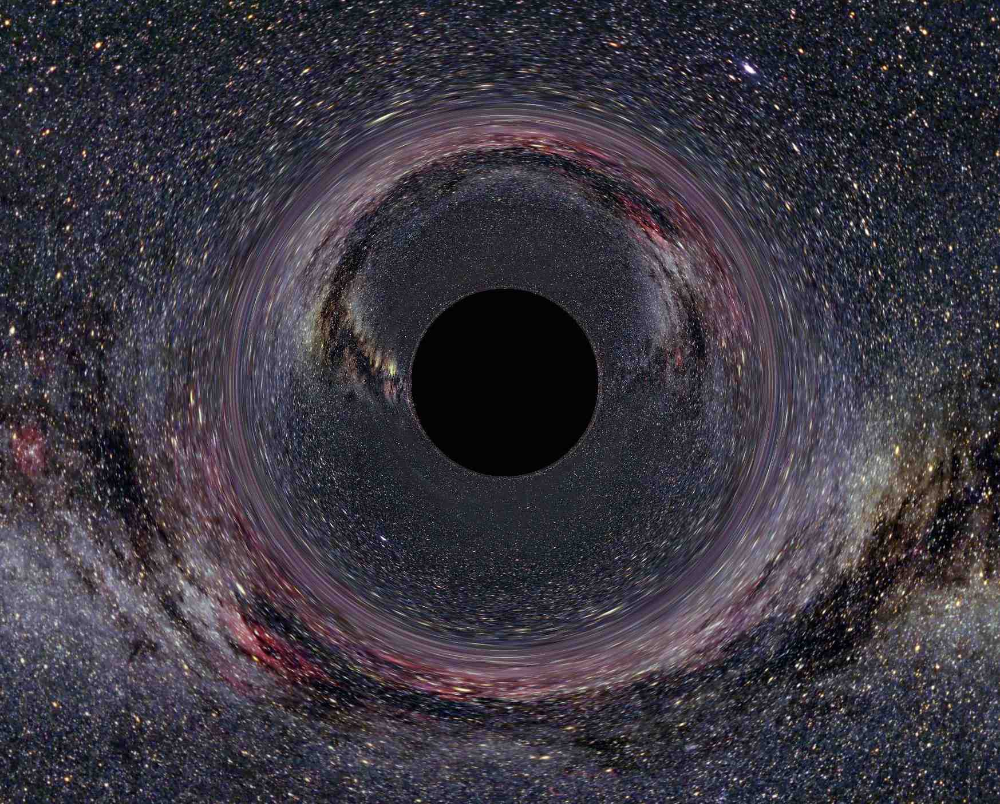
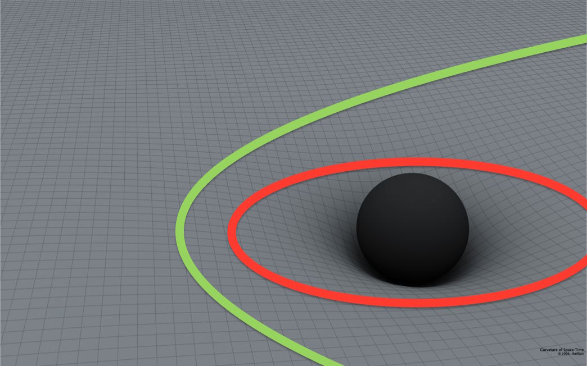
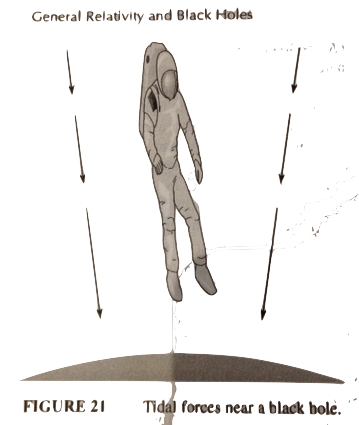
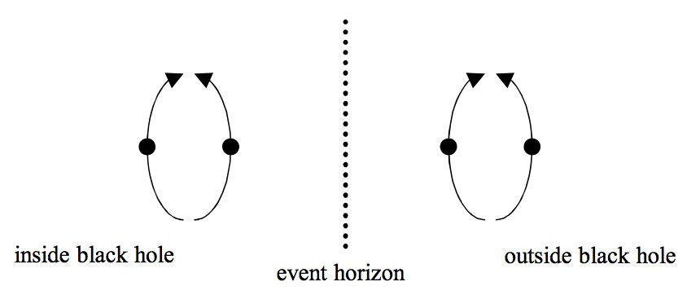
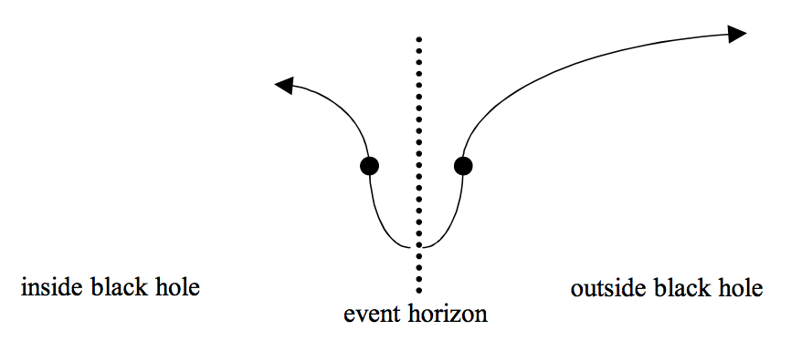
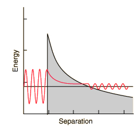
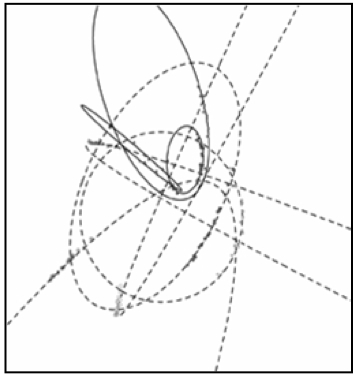
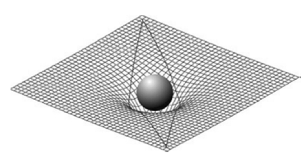
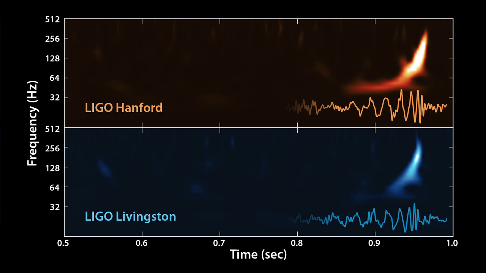
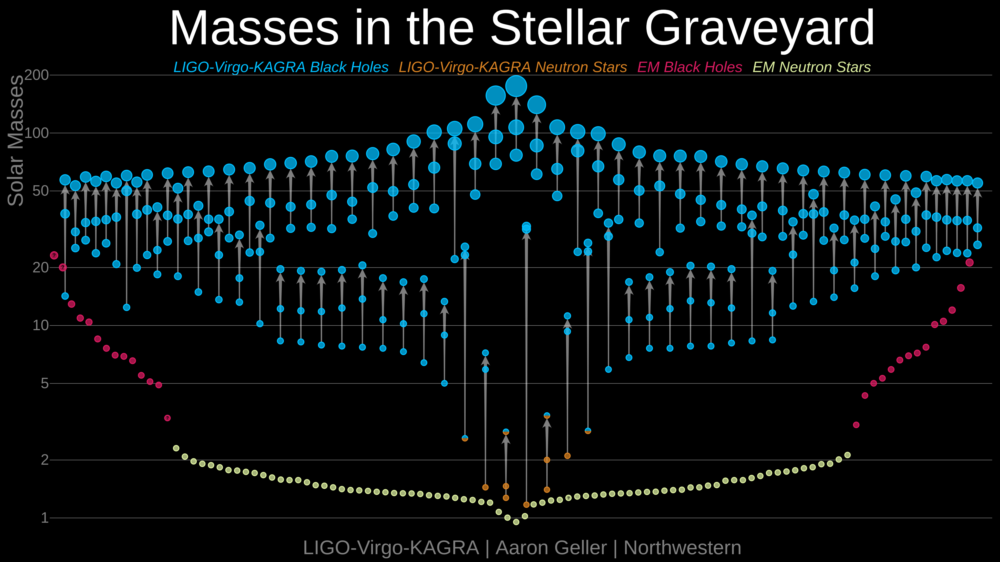

12 The Tolman-Oppenheimer-Volkoff mass limit

- White dwarf equilibria occur where \(P_{\text{c}} = P_{\text{Qe}}\).
- Neutron star equilibria occur where \(P_{\text{c}} = P_{\text{Qp}}\).
- Above \(M_{\text{TOV}}\), no equilibria occur.
13 Karl Schwarzschild - Schwarzschild Radius
Classically, for a particle to be able to escape the gravitational pull of a massive object, it must be moving fast enough for its kinetic energy to balance or exceed its gravitational potential energy.
The classical escape speed, \(v_{\text{e}}\), for an object of mass \(M\) and radius \(R\) is then given by \[\begin{align} \frac{1}{2}mv_{\text{e}}^{2}&=\frac{GMm}{R}\nonumber\\ v_{\text{e}}&=\sqrt{\frac{2GM}{R}} \end{align}\]
According to Special Relativity, the maximum speed that any particle can have is the speed of light in a vacuum, \(c\). Therefore, any physically-realisable escape speed cannot exceed \(c\).
Setting \(v_{\text{e}} = c\), and solving the previous equation for the radius we find \[\begin{equation} R_S=\frac{2GM}{c^{2}}\nonumber \end{equation}\] where \(R_S\) is known as the Schwarzschild Radius.
This is NOT a rigorous derivation of the Schwarzschild Radius – see next slide.
In units of solar mass, we find \[\begin{equation} R_S\approx 1.5\times 10^{-27}\,M\,m\approx 3000\left(\frac{M}{M_{\odot}}\right)\,m\nonumber \end{equation}\]
The Schwarzchild radius of the Earth is therefore \(\approx 1\) cm.
If an object has a radius smaller than the \(R_S\) for its mass, then the escape speed from its surface will be greater than the speed of light. Therefore nothing, not even light, can escape from it. We can refer to such an object a black hole. - Strictly speaking, the expression for \(R_S\) should be derived using General Relativity. - It’s a convenient coincidence that our simple, classical argument gives the same expression, and it is a useful way to help us remember the formula for \(R_S\).

Distortion of space around a black hole
Classically, the Schwarzschild Radius marks the boundary of the black hole: objects outside \(R_S\) can in principle escape from it, those inside \(R_S\) cannot. - Note that the event horizon defined by \(R_S\) is not a physical surface: it is simply the demarcation of the edge of the concealed zone, an ``imaginary surface’’ in spacetime (a bit like the horizon is an imaginary line on the surface of the Earth). - Therefore, we expect the laws of physics inside the event horizon to be just the same as those outside the black hole.
14 Black hole universality
- Black holes “have no hair”. (Known as the “no hair” theorem or conjecture).
- Black holes are in some sense very simple objects and the theorem states that any black hole is completely described by 3 numbers - its mass, angular momentum, and electric charge.
- If these numbers are the same for any two black holes then it doesn’t matter what type of mass lies inside the event horizon.
14.1 Spacetime distortion
In General Relativity, we visualise gravity as being due to distortion, or curvature, of the fabric of spacetime.
Spacetime tells matter how to move, matter tells spacetime how to curve.
-John Wheeler

Larger masses cause a correspondingly greater distortion, or curvature, of space time. Particle orbits are trajectories through this curved spacetime.
Greater and greater masses of smaller and smaller physical extent cause progressively greater curvature of spacetime, giving rise to deeper and deeper ‘gravity wells’.
- The gravitational effect of a black hole is so strong that it `punches a hole’ in spacetime - hence the name black hole. Any particle trajectory crossing the event horizon cannot re-emerge: it must disappear down the hole.
- However, Stephen Hawking proposed a mechanism by which energy and mass can escape from a black hole.
14.2 Tidal forces

Stellar-mass holes exert powerful tidal forces to nearby objects
The difference in force acting on your head and your feet is \[\begin{align} \Delta F &\approx \frac{GMm}{R^{2}} - \frac{GMm}{(R+h)^{2}}\nonumber\\ &\approx GMm\left(\frac{1}{R^{2}}-\frac{1}{(R+h)^{2}}\right)\nonumber\\ &\approx GMm\left(\frac{2Rh + h^{2}}{R^{4}+2R^{3}h+R^{2}}\right)\nonumber\\ &\approx 2GMmh/R^{3}\nonumber \end{align}\]
At the Schwarzchild radius \[\begin{equation} \Delta F\approx 10^{12}\left(\frac{M}{M_{\odot}}\right)^{-2}\left(\frac{m}{100\text{kg}}\right) \left(\frac{h}{1\text{m}}\right)\,\text{N}\nonumber \end{equation}\]
14.3 Hawking radiation
- According to quantum mechanics, the `vacuum’ of space is not completely empty. Pairs of virtual particles and anti-particles are spontaneously created, and then annihilate each other.
- They `borrow’ energy from the vacuum, and this is allowed so long as their lifetime \(\Delta t\) is less than the maximum allowed by the Heisenberg Uncertainty Principle: \(\Delta t \leq \hbar/E\), where \(\hbar\) is the Plank constant and \(E\) is the total energy of the virtual particle- antiparticle pair.
- This happens both inside and outside the event horizon (since the same physics applies in both places):

Suppose a virtual particle-antiparticle pair is created very near to the event horizon:

- One particle crosses the event horizon and is trapped inside the black hole. Therefore, it cannot annihilate with its partner, and so the partner can escape.
- An external observer sees the escaping particle coming from the vicinity of the black hole: it appears that the black hole is radiating particles.
- For energy to be conserved, the black hole must lose the corresponding mass- energy. We call this mass-loss process black hole evaporation.
- The escaping particles are called Hawking Radiation.
We can think about Hawking radiation another way.
<list>
<li> Quantum mechanics describes the position of a particle by its
wavefunction.
<li> The wavefunction of a particle behind a barrier extends outside the barrier (but with a reduced amplitude).
<li> So there is a small but finite probability of finding the particle outside the barrier.
<li> Particles near the event horizon can 'quantum tunnel' out of the black hole in this way.
</list>
The particle wavelengths of the Hawking Radiation will be comparable to the Schwarzschild Radius: \(\lambda \approx R_S\). - If the particles are photons, the photon energy will be given by \[\begin{equation} E = h\nu=\frac{hc}{\lambda}\approx \frac{hc}{R_S}=\frac{hc^{3}}{2GM}\nonumber \end{equation}\] - These photons escape and form a radiation field just outside the event horizon. In practice, this has a perfect blackbody spectrum.
We can find the characteristic temperature of this radiation using \(E \approx kT\), so \[\begin{equation} T \approx \frac{hc^{3}}{2kGM}\,\left(\times\frac{1}{8\pi^{2}}\right)\nonumber \end{equation}\] - We can now use this temperature with the Stefan-Boltzmann law to define the Hawking Luminosity: \[\begin{align} L_{\text{H}}&=4\pi R_S^{2}\sigma T^{4}\nonumber\\ &=4\pi\left(\frac{2GM}{c^{2}}\right)^{2}\sigma\left(\frac{hc^{3}}{16\pi^{2}kGM}\right)^{4}\nonumber\\ &=\frac{\sigma}{4096\pi^{7}}\left(\frac{h^{2}c^{4}}{k^{2}G}\right)^{2}M^{-2}\nonumber %\\ %&=\frac{hc^6}{30720\pi^2G^2M^2}\nonumber \end{align}\] - (this is the first theoretical derivation of a law containing both \(h\) and \(G\) - a hint toward quantum gravity!) - We see that the Hawking Luminosity varies inversely with the square of the mass, so smaller black holes are more luminous. For a \(1\,M_{\odot}\) black hole, \(L_{\text{H}} \approx 10^{-27}\) W. Unobservable in practice.
Since the total mass-energy of a black hole of mass \(M\) is \(Mc^{2}\), the characteristic timescale for the Hawking Luminosity to radiate away all the black hole’s energy (and hence for it to evaporate completely) will be given by \[\begin{equation}
t_{\text{H}}\approx\frac{Mc^{2}}{L_{\text{H}}}\approx
10^{66}\left(\frac{M}{M_{\odot}}\right)^{3}\,\text{years}\nonumber
\end{equation}\]
- Since the Universe is about 14 billion years old (\(\sim 10^{10}\) years), for a black hole to have completely evaporated it must have a \(t_{\text{H}}\) of less than this time. Using the age of the Universe as an upper limit gives us the mass of the smallest black hole to have had the chance to evaporate: \(M\approx 10^{-18.7}\,M_{\odot}\approx 10^{12}\) kg. - Using our equation for the Schwarzschild radius, we find that this corresponds to \(R_S \approx 10^{-15}\) m. - Hence only miniscule black holes (about the size of an atomic nucleus) will have had enough time to evaporate completely.
14.4 Blandford-Znajek Process
Energy can also be extracted from <it>spinning</it> black holes if they are embedded in strongmagnetic fields via the Blandford-Znajek Process. It is channeled out in powerful jets along the spin axis of the black hole.
This is thought to be the mechanism for producing Gamma-ray bursts and quasars.
The B-Z process is thought to provide sufficient power to see these from megaparsec distances.

14.5 Compact X-ray accretion sources
We know that the energy released by a falling mass \(m\) accreting onto an object of mass \(M\) and radius \(R\) is \[\begin{equation} E_{\text{acc}}\approx \frac{GMm}{R}\nonumber \end{equation}\]
The energy which would be released by completely annihilating the mass \(m\) is (from Einstein’s mass-energy equivalence) \[\begin{equation} E_{\text{mass}}\approx mc^{2}\nonumber \end{equation}\]
So we can define an accretion efficiency \(\eta\) as the fraction of a test mass’s annihilation energy which would be liberated by its accretion onto an object: \[\begin{equation} \eta = \frac{E_{\text{acc}}}{E_{\text{mass}}}=\frac{GMm}{R}\frac{1}{mc^{2}}=\frac{GM}{Rc^{2}}\nonumber \end{equation}\]
We can calculate this accretion efficiency for various objects:
| Object | Sun | White Dwarf | Neutron Star | Black Hole |
|---|---|---|---|---|
| \(\eta\) | \(\sim 10^{-6}\) | \(\sim 10^{-4}\) | \(\sim 0.2\) | \(\sim 0.5\) |
- Hence accretion onto neutron stars and black holes is a highly efficient energy source. Such systems appear as extremely luminous X-ray sources, with luminosities in the region of \(10^{30}\) W.
- These sources often `flicker’ on timescales of less than a second. Therefore they must be less than about a light-second in size (\(\sim 10^{8}\) m), otherwise emission coming from various points in the source would smear out the flickering.
- Only accretion onto neutron stars and black holes gives the required efficiency in such a small volume. Compact X-ray accretion sources are therefore another convincing piece of evidence for the existence of neutron stars and black holes.
14.6 How can we tell the difference between accretion onto a neutron star and onto a black hole?
- Accreting material piles up on the surface of a neutron star, leading to periodic, very bright X-ray bursts (in the same way as accreting white dwarfs give nova outbursts).
- Some compact X-ray accretion sources do not show burst emission profiles. It is believed that these systems contain black holes: the black hole has no `solid’ surface on which material can pile up - instead the accreting matter slips beneath the event horizon and becomes hidden from view.
14.7 Other black-hole signatures
14.7.1 Very close periapses in stellar orbits
Many galactic centres (including the Milky Way) are believed to contain supermassive black holes (massing millions of \(M_{\odot}\)).

- Infra-red stellar orbital observations show that the gravitating mass at the centre of the Milky Way has a mass of \(\sim 4\times 10^{6}\,M_{\odot}\) and a radius of less than 140 AU.
- The Schwarzschild Radius of an object of this mass would be 0.08 AU, so a black hole is a good candidate.
- We know of no other type of object which could have this huge mass and still fit into a radius as small as 140 AU.
14.7.2 Gravitational Lensing
General Relativity predicts that light is affected by gravity in the same way that matter is: light rays will be deflected by the presence of gravitating matter. In this way, mass can act as a gravitational lens, focusing light from distant sources. The lensing effect is most pronounced for extremely dense objects like black holes.

Black holes may be detectable by the distortion they cause in space time bending the light from more distant sources. We call this effect gravitational lensing. Some promising black hole candidates have been identified, but as yet there are no unambiguous detections.
14.8 Gravitational Waves

- Gravitational waves are tiny perturbations in space-time caused by accelerating mass. They travel at the speed of light.
- They interact so incredibly weakly with matter that they are very hard to detect.
- Therefore we rely on some of the most violent and energetic astrophysical events in the universe to provide signals.
- We also require the most sensitive measuring devices ever constructed.
- On September 14th 2015 the Advanced LIGO interferometers first detected a signal from the merger of 2 black holes.
- Dozens more binary black hole gravitational-wave signals have been observed since, with masses between \(\sim 8 - 50\,M_\odot\). Larger BHs make louder signals so these tend to be heavier than ones we know about in the galaxy.
- A binary neutron star coalescence was detected in 2017, which revealed that these are responsible for short gamma-ray bursts and kilonovae which produce very heavy elements like gold.
As black holes in a tight binary system radiate gravitational waves the orbit shrinks in a run-away process. Eventually when it reaches a few \(R_S\) apart, they merge to form a single, larger black hole.

